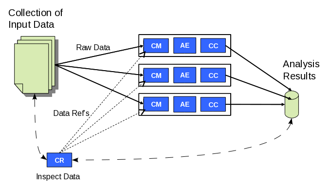

A classic UIMA pipeline starts with
a Collection Reader (CR) that defines how to segment the input collection into separate
artifacts for analysis, reads the input data, initializes a new CAS with each artifact and
returns the CAS to be sent to downstream analytic components.
Because a single CR supplying artifacts to a large number of analysis pipelines
would be a bottleneck, DUCC implements collection level scale out according to the design in
Figure 1.

Figure 1 - DUCC Collection Processing Job Model |
In a DUCC collection processing job the role of collection segmentation is
implemented by the CR run in the Job Driver. Figure 1 shows the CR inspecting
the input collection to determine how to segment the data into work items to be sent
to the analysis pipeline. The CR may also inspect the target output location to see
which work items have already been done. Then the CR outputs small CASes containing
references to input work items and the associated output locations.
DUCC wraps the user's CR in a Job Driver, which sends the CASes to a queue feeding
one or more instances of a Job Process containing the analysis pipeline.
Input data reading, artifact extraction and CAS initialization are implemented by the Cas Multiplier
(CM) running in the Job Process. Each artifact CAS is then passed thru the analysis engine (AE) and
CAS Consumer (CC) components.
A DUCC job specification includes the number of pipeline instances to run in each Job Process.
Each instance is run in a separate thread.
During the job DUCC will automatically scale the number of Job Processes running based on the
number of number of work items left to do, the number of threads per Job Process, and the
amount of resources available to the job.
Jobs are tracked on the Jobs page of DUCC webserver.


 Getting Started: Apache UIMA DUCC
Getting Started: Apache UIMA DUCC